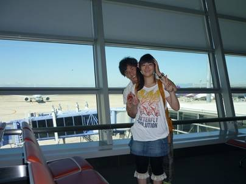
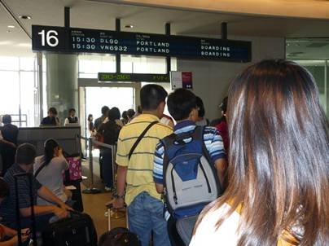
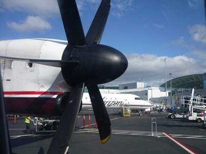
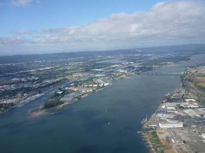
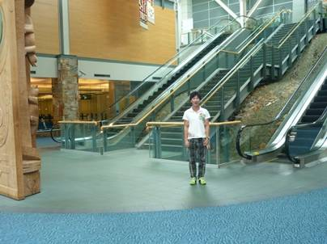
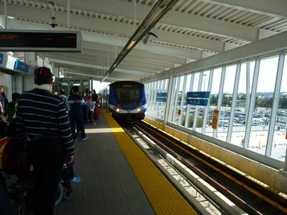
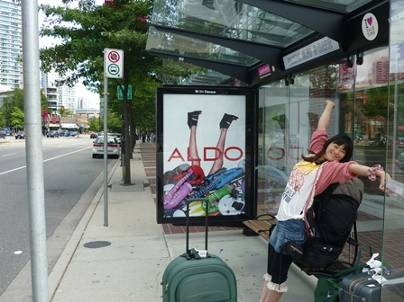
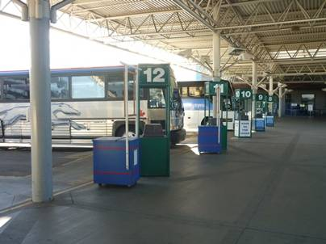
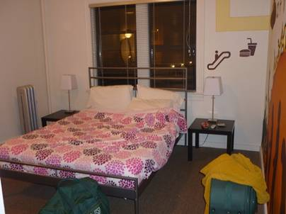

1日目(9/4)～長い一日～
JapantoCanadaviaU.S.A.
待ちに待った出発の日。この日のために、半年間節約生活を続けてきた。1年半前の冬のカナダ旅行では成田からの直行便だったが、今回はセントレアが出発地。成田空港、アメリカのポートランド空港を経由して、目指すはカナダのバンクーバー。


ポートランド空港ではバンクーバー行きの便に乗り換えねばならなかったのだが、乗り換えの時間は１時間ちょっとしかなかった。アメリカでの乗り換えは入国審査をせねばならず、長蛇の列ができていてなかなか進まなかった。これでは間に合わないと思い、係りの人に行ったら優先的に通してもらうことができた。さらに面倒なことに、一回荷物を受けとらなくてはならない。次の便の時間がせまっていたのであせった。ゲートに向かうと、チケットに記載の航空会社とは異なる会社が電光掲示板に示されていて、外には相当小さなプロペラ機が止まっていた。少し不安だったが、係員の人はこれでいいんだといってくれた。どうやらデルタ航空と提携しているらしい。２度も乗り換えるのは面倒だ。


なつかしのバンクーバーに到着。

バンクーバー空港から市街地へ向かうには、1年半前ならバスで行く必要があったのだが、今は冬季五輪にあわせて建設された“Canada
Line”というリニアモーターカーに到着ロビーを出るとすぐ乗れるようになっているので便利だ。

バンクーバーの市街地に到着。すこぶる眠い・・・。早く宿でゆっくりしたいのだが、今日の宿はバンクーバーではなければカナダでもない。これからの長旅の頼もしい相棒となるレンタカーを借りるため、国境を越え、アメリカ、シアトルに行かなければならないのだ。

シアトルまで行くのは飛行機ではなく、Greyhoundというアメリカ、カナダでは有名な長距離バス。ついさっきまでアメリカにいたのにどうしてこのような一見無駄に思えるような事をしたかというと、それは金のためだ。まず、レンタカーの値段はカナダよりもアメリカの方が圧倒的に安かった。たとえば、カナダで3週間借りようとすると、25歳未満ということで追加料金を取られることもあり、16万くらいはする。一方、アメリカで借りれば10万くらいで済んでしまうのだ。

バスに乗り、シアトルへ向かう。国境を越えるときは客はみんなバスを降りて入国審査尾をしなければならない。このとき、荷物も一緒に持ってかなければならないのだが、よく分からず放置してしまったので恥をかいてしまった。

この日の宿に到着。行きの飛行機、バスと全く眠れなかったので疲労が半端無い。30時間くらいは起きてる気がする・・・。まおは常に爆睡していたのだが、二人とも疲れた。